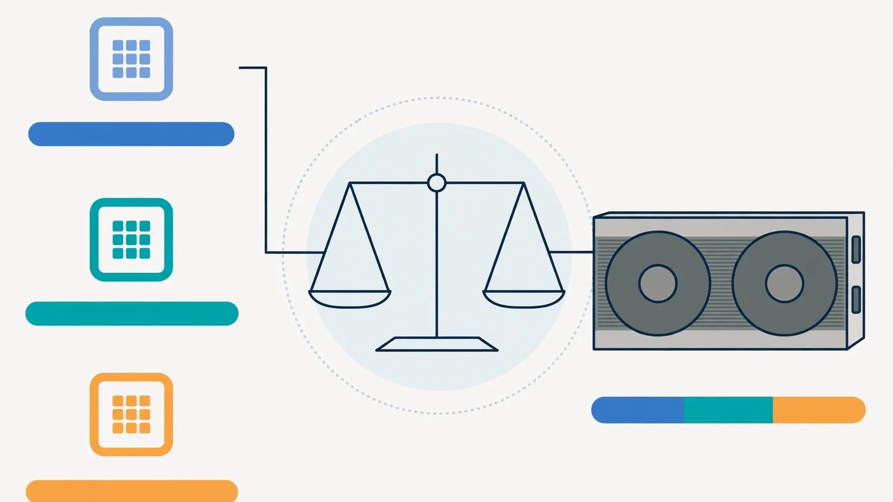

Best CPU for RTX 4070 and 4070 Super: A Balanced Pairing Guide
The short answer: a current mid-range or upper mid-range CPU is the best partner for an RTX 4070 or 4070 Super. Something in the class of a Ryzen 5 7600, a Ryzen 7 7700X, or a Core i5-13600K or 14600K keeps the card fed at 1080p and 1440p, while a much weaker CPU can hold it back and a flagship CPU mostly adds cost, not frames. This guide explains why that tier is the sweet spot, which CPUs sit in each tier, and how resolution, refresh rate and the rest of your system change the answer.

The Short Answer: Aim for the Balanced Tier, Not the Flagship
An RTX 4070 is a strong upper mid-range graphics card: fast enough for high settings at 1440p, and comfortably overkill for many games at 1080p. That position sets the CPU requirement. The processor only needs to prepare frames as fast as the card can render them, and at 1440p the card is usually the slower half of the pair — so a mid-range CPU is enough, and a flagship CPU spends most of its time waiting.
The same logic holds for the RTX 4070 Super. It is somewhat faster than the standard 4070, so it raises the ceiling a little and asks slightly more of the processor at 1080p, but it does not move you into a different CPU class. If a CPU pairs well with the 4070, it pairs well with the 4070 Super. Our CPU and GPU pairing guide explains this tier logic in general terms; here we apply it to this one card.
What a CPU Actually Has to Do for This Card
Every frame starts on the CPU: game logic, physics, AI, draw calls telling the GPU what to draw, and preparing the data the card will render. The GPU then does the heavy pixel work. If the CPU finishes its part slower than the GPU finishes rendering, the GPU idles between frames and your frame rate is CPU-limited — the classic CPU bottleneck.
Two things matter most for this job. First, single-core speed: most games still lean on a few fast cores rather than spreading evenly across many, so a CPU with strong per-core performance beats one with many slower cores. Second, enough modern cores and threads — typically six to eight strong cores — so background tasks and busy scenes do not stall the main game thread. Cache helps too, which is why AMD's 3D V-Cache chips punch above their clock speeds in many games, but it is a bonus, not a requirement, for this tier of card.
The Balanced Picks at Each Budget
| Tier | Example CPUs | Best for |
|---|---|---|
| Budget floor (acceptable, with limits) | Ryzen 5 5600 / 5600X, Core i5-12400F | 1440p gaming on an existing platform; 1080p at modest refresh rates |
| Sweet spot (recommended) | Ryzen 5 7600 / 7600X, Core i5-13600K / 14600K | 1080p and 1440p at high refresh rates, the best value pairing |
| Upper mid-range (best for high-refresh 1080p) | Ryzen 7 7700X / 7800X3D, Core i7-13700K / 14700K | Competitive 1080p, CPU-heavy games, and headroom for a future GPU upgrade |
| Flagship (overkill for gaming alone) | Ryzen 9 7900X / 7950X, Core i9-13900K / 14900K | Heavy production work alongside gaming, not extra FPS for this card |
The sweet-spot row is where most buyers should land. A Ryzen 5 7600-class chip or a Core i5-13600K-class chip gives the 4070 all the frames it can render in the games most people play, and leaves budget for the parts that actually change the experience — a better monitor, more storage, or 32GB of RAM. If you play competitive shooters at 1080p on a high-refresh monitor, stepping up to the upper mid-range row buys extra headroom where the CPU is the limit; if you play story-driven games at 1440p, it mostly buys nothing visible. Before buying, check your exact combination on the PC Bottleneck Calculator and read what a good bottleneck percentage means so you do not overreact to a small number.
1080p vs 1440p: The Same Card, a Different CPU Answer
Resolution is the single biggest factor in this pairing, because it only adds work for the GPU. At 1080p the graphics card finishes each frame quickly, so a high frame-rate target exposes the CPU: the processor must prepare every frame, and a weaker CPU becomes the ceiling. That is why high-refresh 1080p players benefit most from the upper mid-range tier.
At 1440p the balance flips. Each frame carries far more pixels, so the GPU takes longer per frame and the CPU gets breathing room. A budget-floor CPU that struggles at 1080p high-refresh can be perfectly fine at 1440p, and a flagship CPU gains little because the card is the limit anyway. At 4K the effect is stronger still — even a modest modern CPU keeps up — but 4K is not really this card's home territory for demanding games at high settings, so treat it as a bonus, not the plan. Our resolution bottleneck guide walks through the same shift for any pairing.
What About Older or Weaker CPUs?
If you already own the RTX 4070 and are wondering whether your current CPU is holding it back, the test is simple: watch GPU usage while you play. If the GPU sits well below full load while the frame rate is below your target, and one CPU core is maxed out, the processor is the limit. If the GPU is near full load, the card is doing all it can and a CPU upgrade will not raise your frame rate. Our step-by-step bottleneck check and low GPU usage guide cover both readings.
Older four-core CPUs and early Ryzen or Intel generations are the most likely to hold a 4070 back, especially at 1080p. But age alone is not the verdict: a well-kept Ryzen 5 5600 or Core i5-12400F is still a reasonable partner at 1440p, and upgrading it for a few extra frames at 1080p may be poor value. Upgrade when your own measurements show a CPU limit in the games you actually play, not because a chart says your chip is old. If your CPU is at 100% in general use, our guide to fixing 100% CPU usage is worth checking first — background software can mimic a weak CPU.
RTX 4070 vs 4070 Super: Does the Super Change the Pick?
Barely. The 4070 Super is a faster card in the same family, with more cores enabled and somewhat higher throughput, so it renders frames a little faster and therefore asks the CPU to prepare them a little faster. In practice that means the same tiers, with a small shift in emphasis: at 1080p high-refresh, the Super rewards the upper mid-range tier slightly more; at 1440p, the card is still the limit in demanding games and the sweet-spot tier is still the right buy.
Do not buy a flagship CPU "for the Super" unless you have another reason for it. The extra card performance is real but modest relative to the jump between CPU tiers, and the money is better spent on the monitor, cooling, or a future GPU fund. Both cards also pair with the same supporting hardware — the same RAM, power and cooling guidance below applies to either.
Platform Costs: The CPU Price Is Not the Whole Price
A CPU recommendation that ignores the platform is incomplete. Moving from an older AM4 system to a Ryzen 7000 chip means a new motherboard and DDR5 RAM; moving to a current Intel platform may mean a new board too, and possibly a cooler upgrade for the hotter K-series chips. Price the whole platform — chip, board, RAM and cooler — before comparing two CPUs, because a cheaper chip on an expensive platform can cost more than a dearer chip that drops into the board you already own.
That platform maths also cuts the other way: if you already own a solid AM4 board and a Ryzen 5 5600, staying put may beat a full platform swap, and if you are building from scratch, a socket with newer CPUs still to come is worth a small premium. Check the motherboard angle in our motherboard bottleneck guide before you commit.
RAM, Cooling and Power: The Supporting Cast
A balanced CPU and GPU can still be let down by the rest of the system. RAM first: two matched sticks in dual channel, with the correct slots and XMP or EXPO enabled, matter more than chasing the fastest kit on the shelf. Sixteen gigabytes is the practical floor for modern gaming; 32GB is the comfortable choice if you stream, keep a browser full of tabs open, or play games that stream large worlds. See our single vs dual channel guide and XMP/EXPO guide for the details.
Cooling matters because a hot CPU drops its clock speed to protect itself, and a throttled CPU looks exactly like a weak one — make sure the cooler matches the chip and case airflow is not choking it. Our thermal throttling guide shows how to tell throttling from a genuine bottleneck. Power is simpler: buy a quality unit with comfortable headroom for transient spikes, as our PSU bottleneck guide explains.
CPU-Heavy Games and Streaming Change the Maths
Some games lean on the CPU far more than average: large strategy games, simulation titles, battle royales with many players, and open worlds that stream constantly. If those are your main games, weight the upper mid-range tier more heavily even at 1440p, because busy scenes raise CPU demand while the GPU load stays roughly flat. Our Fortnite bottleneck guide shows how one game can flip between CPU and GPU limits by scene.
Streaming while gaming also raises the CPU bar, since encoding, capture and chat software compete for the same cores the game needs. If you stream, favour more cores and threads — the upper mid-range tier — or offload encoding to the GPU's hardware encoder, which the 40-series does well. Our streaming bottleneck guide covers that trade-off in full.
How to Decide in Five Minutes
- Set your resolution and refresh target. 1080p high-refresh pushes you up a tier; 1440p at 60–144Hz keeps you in the sweet spot.
- List your main games. CPU-heavy genres and streaming push you up; story-driven games at 1440p do not.
- Price the whole platform. Chip plus board plus RAM plus cooler, not the chip alone.
- Check the pairing. Run your exact CPU and GPU through the PC Bottleneck Calculator at your resolution.
- Measure after you build. If GPU usage is low and a CPU core is maxed, the CPU is the limit; if the GPU is near full load, the card is — and no CPU upgrade will help.
Free PC Bottleneck Calculator — Estimate CPU and GPU balance for your resolution and workload: check whether your CPU or GPU is the slow half of the frame on the PC Bottleneck Calculator (see its methodology page) before you buy a CPU for your RTX 4070.
Conclusion
For an RTX 4070 or 4070 Super, the best CPU is a current mid-range or upper mid-range chip: the sweet spot for most players, the upper tier for high-refresh 1080p and CPU-heavy games, and a flagship only if heavy production work justifies it. Match the tier to your resolution and refresh target, price the whole platform, and let your own usage measurements — not a chart — make the final call. To check your exact pairing, try the free PC Bottleneck Calculator.
Frequently Asked Questions
What is the best CPU for an RTX 4070?
For most gamers, a current mid-range or upper mid-range CPU is the best match: something in the class of a Ryzen 5 7600 or 7600X, a Ryzen 7 7700X, or a Core i5-13600K or 14600K. These keep the RTX 4070 fed at 1080p and 1440p without spending flagship money on CPU performance the card cannot turn into extra frames.
Does the RTX 4070 Super need a faster CPU than the RTX 4070?
Not a different class of CPU. The 4070 Super is somewhat faster, so it raises the frame-rate ceiling slightly and is a little more demanding of the processor at 1080p, but the same balanced tiers apply. If your CPU is a good match for the 4070, it is a good match for the 4070 Super too.
Will a Ryzen 5 5600 bottleneck an RTX 4070?
It depends on resolution and target frame rate. At 1440p in demanding games the pairing is usually workable, because the graphics card does most of the work. At 1080p with a high-refresh target, an older mid-range CPU like the Ryzen 5 5600 is more likely to cap the frame rate before the card reaches its limit.
Is a Ryzen 9 or Core i9 overkill for an RTX 4070?
For gaming alone, usually yes. A flagship CPU costs substantially more than a balanced mid-range chip, but the RTX 4070 sets the frame-rate ceiling in most games, so the extra CPU headroom rarely becomes extra FPS. Flagship CPUs make sense if you also do heavy work that uses those cores, such as rendering or compiling.
Does RAM matter for an RTX 4070 pairing?
Yes, though less than the CPU choice itself. Two matched sticks in dual channel matter more than chasing the fastest kit, and 16GB is the practical floor for modern gaming, with 32GB the comfortable choice for multitasking. A single stick or very slow RAM can hold back even a well-matched CPU and GPU.
Sources
Official documentation referenced in this guide: